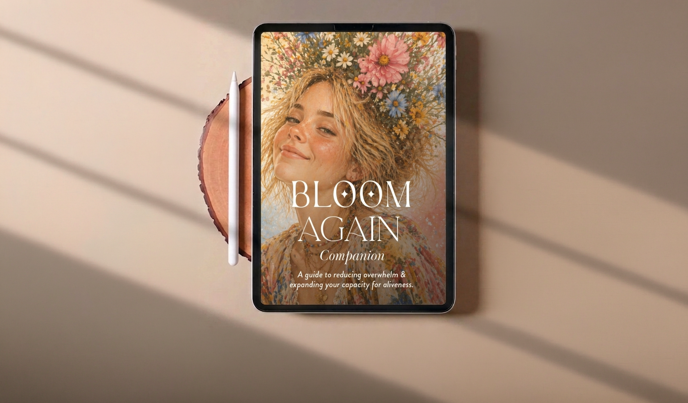
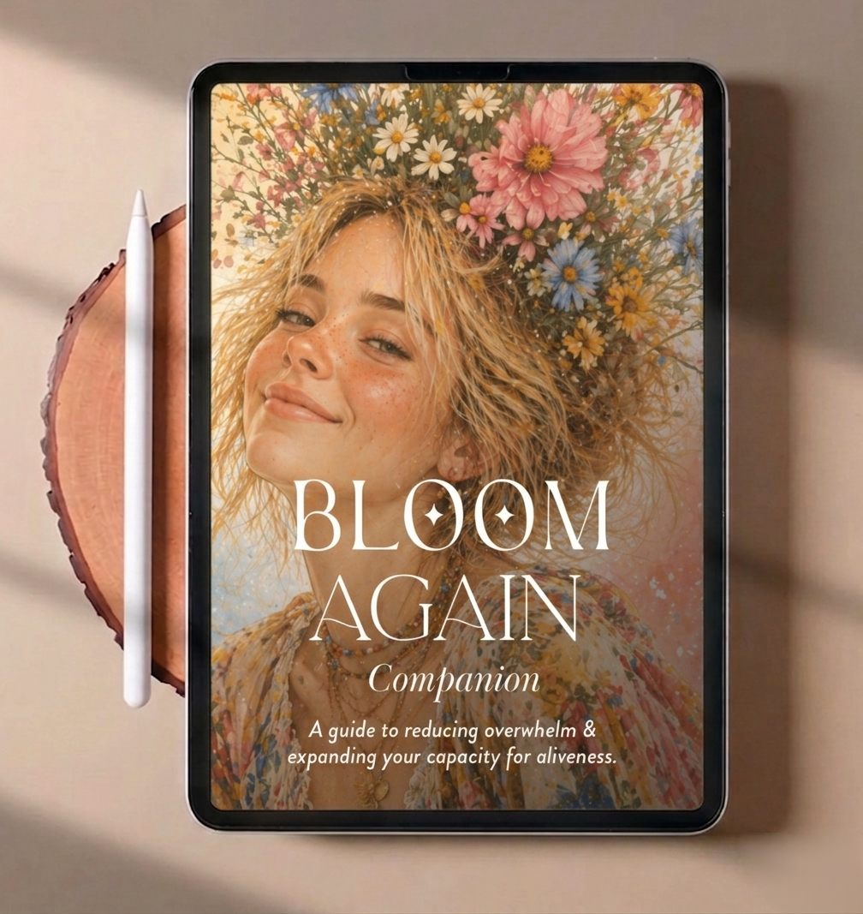

Just choose what feels most true right now:
"When a flower doesn't bloom,
you fix the environment in which it grows, not the flower."
When your system is running on empty,
don't ask it to do more.
Cut what's draining you.
Add back what's holding you up.
Less noise. Less input. Less explaining. Less performing. Less deciding.
More food. More fluids. More sleep. More darkness. More quiet. More support.
You don't have to be functional today.
You just have to stop making it harder for your body to recover.
For the next 24 to 72 hours, your job is not to fix your life.
Expansion is the last layer of the Companion, the space for play, creativity, and feeling alive again. It tends to work best once the rest of you already feels safe and rested, not as another thing to chase.
If something creative or playful genuinely sounds like what would help you recover right now, because that is honestly part of how you get fueled, you are welcome to go in.
If it feels more like one more thing to do, that is useful information too. This can be your reminder to rest and refill a little more first. We can only really give and expand once our own cup has something in it again.
When you're running on empty
Come back to the fuller picture below whenever you have more to give.
Your saved tips, gathered in one place.
Want to talk it through?
I'm not a therapist or a doctor, just someone who has lived through burnout myself, who is highly sensitive and neurodivergent too, and who would love to brainstorm this with you and think through some ideas together. I'm opening a small waiting list for 1:1 calls.
Join the Waiting Listbloom-again-vpkzmm.subscribepage.io